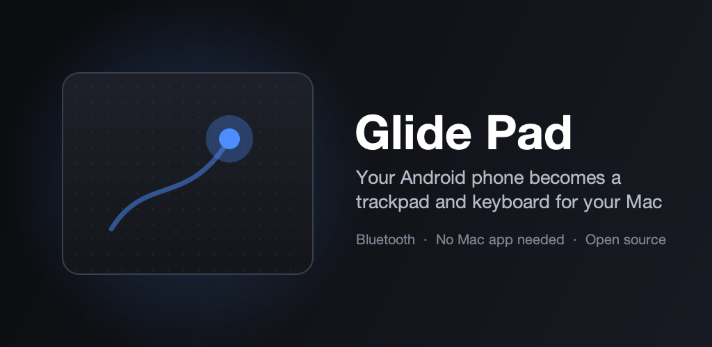

Turn your Android phone into a Bluetooth trackpad and keyboard for your Mac, Windows PC, Chromebook, iPad or smart TV. Nothing to install on the other device.
Privacy Policy · Source code (MIT) · Contact pingdrop.support@gmail.com